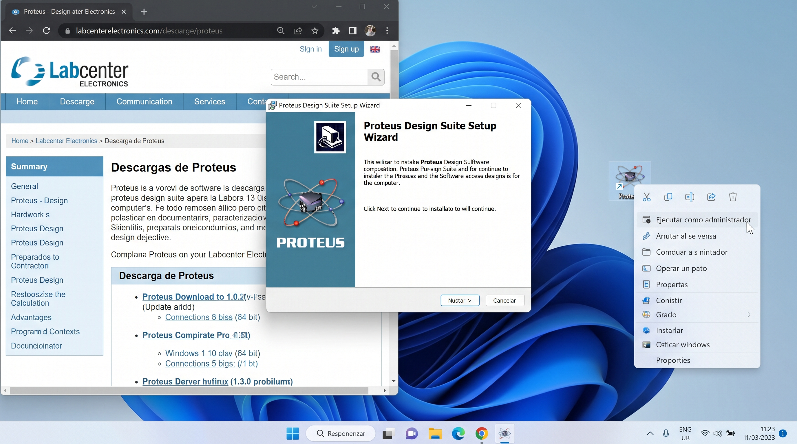
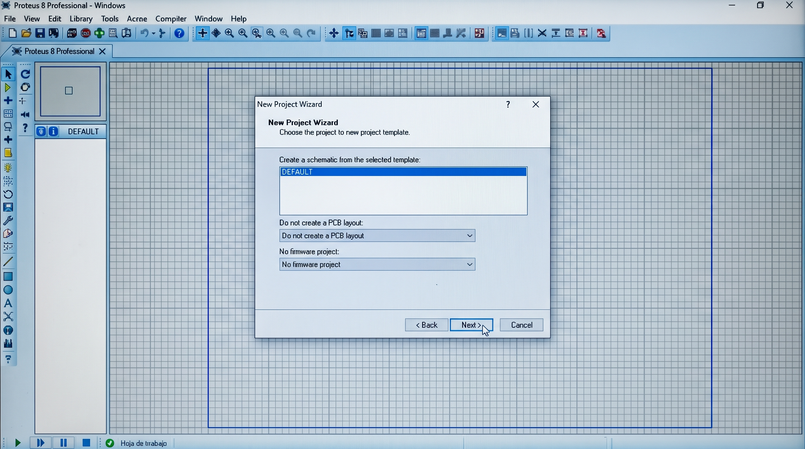
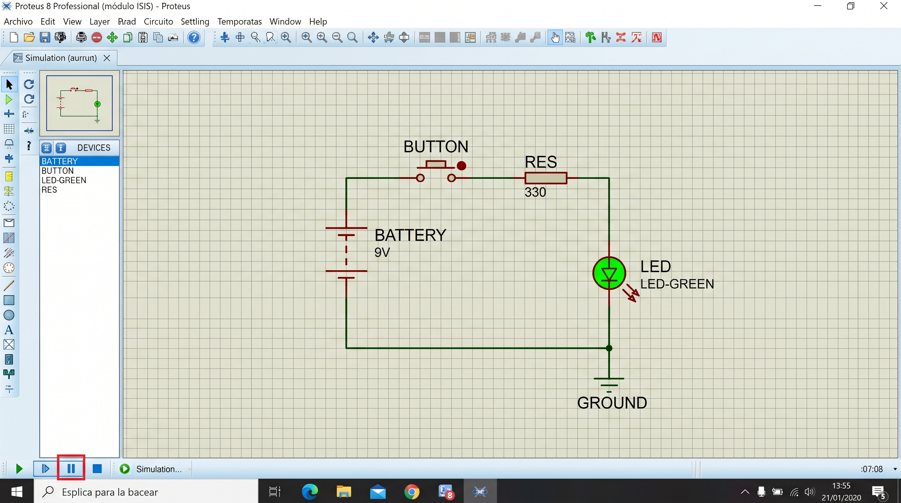
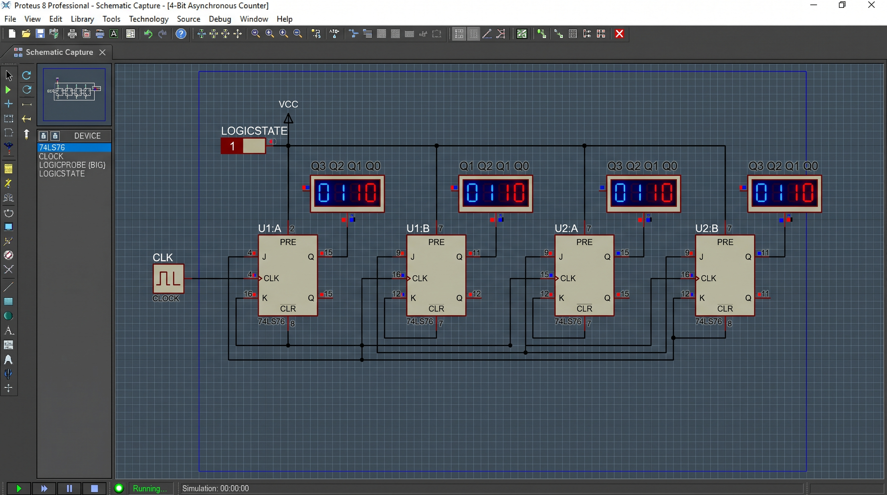
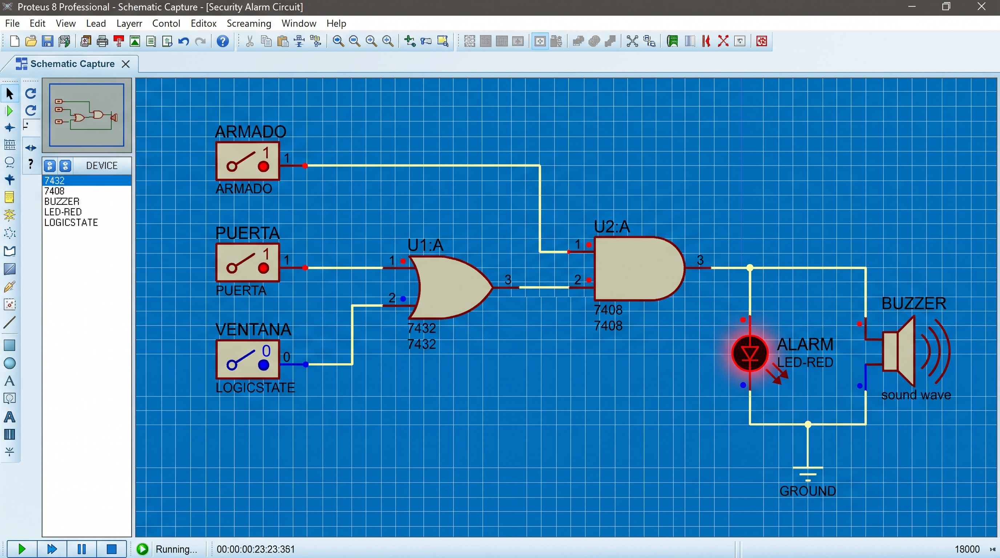

Guía Práctica de Proteus
Aprende desde cero cómo instalar Proteus, configurar tu entorno de trabajo en el módulo ISIS y simular circuitos electrónicos básicos, combinacionales y secuenciales digitales aplicados al análisis de señales.
Paso 1: Descarga e instalación
1.1 Descargar el instalador oficial
Ingresa al portal oficial de Labcenter Electronics y descarga la versión educativa o de demostración
(Proteus_8.x_Demo.exe) compatible con Windows.
1.2 Ejecutar el asistente de instalación
Haz clic derecho sobre el instalador y selecciona Ejecutar como administrador. Acepta los términos de licencia y selecciona la instalación típica (Typical).
1.3 Configurar permisos de administrador
En el acceso directo del escritorio, abre Propiedades > Compatibilidad y marca Ejecutar este programa como administrador para evitar errores al cargar las librerías de componentes.

Figura 1: Proceso de descarga, asistente Setup Wizard y permisos en Windows.
Paso 2: Crear un proyecto y conocer el entorno
2.1 Iniciar el asistente New Project Wizard
Abre Proteus y haz clic en New Project. Asigna un nombre a tu práctica, elige una carpeta
de destino y avanza con Next dejando la plantilla DEFAULT para esquemáticos.
2.2 Reconocer las herramientas principales
En la barra vertical izquierda encontrarás Component Mode (ícono del amplificador operacional) y Terminals Mode. En la esquina inferior izquierda se ubican los controles de simulación (Play, Step, Pause, Stop).

Figura 2: Configuración de plantilla DEFAULT en el asistente de nuevo proyecto.
Paso 3: Ejemplo 1 — Circuito básico con LED e interruptor
3.1 Buscar componentes en la librería
Presiona el botón P (Pick Devices) y agrega los siguientes dispositivos a tu lista:
BATTERY— Fuente de alimentación DC (configurada a 9V).BUTTON— Pulsador interactivo normalmente abierto.RES— Resistencia limitadora (configurada a 330 ohmios).LED-GREEN— Diodo emisor de luz verde animado.
3.2 Cablear, añadir tierra (GND) y simular
Une los componentes en serie formando un lazo cerrado y conecta una terminal GROUND al polo negativo. Finalmente, presiona Play en la esquina inferior izquierda y haz clic sobre el pulsador para encender el LED.

Figura 3: Circuito cableado con conexión a tierra (GROUND) y simulación activa.
Paso 4: Ejemplo 2 — Contador Binario Asíncrono de 4 bits con Flip-Flop JK
Los contadores digitales son fundamentales en telecomunicaciones para dividir frecuencias y sincronizar tramas de datos. En este ejemplo armaremos un contador ascendente de 0 a 15 (MOD-16) utilizando Flip-Flops JK en modo conmutación (Toggle).
4.1 Componentes necesarios en Proteus
Abre el buscador de componentes (tecla P) y añade los siguientes elementos:
74LS76— Circuito integrado con doble Flip-Flop JK con disparador por flanco de bajada (necesitarás 2 integrados para tener 4 Flip-Flops).CLOCK— Generador de pulsos de reloj digital (lo encontrarás en Generator Mode en la barra izquierda).LOGICSTATE— Interruptor lógico interactivo (para fijar el estado alto 1 en las entradas J y K).LOGICPROBE (BIG)— Sonda lógica visual para observar los bits de salida (Q0, Q1, Q2, Q3).
4.2 Guía de conexión paso a paso
- Coloca los 4 Flip-Flops JK en fila de izquierda a derecha (FF0, FF1, FF2 y FF3).
- Coloca un
LOGICSTATEen estado 1 y conéctalo a todas las entradas J, K, PRE (Preset) y CLR (Clear) de los 4 Flip-Flops para habilitar el modo Toggle (basculación). - Conecta el generador
CLOCK(configurado a 1 Hz o 2 Hz) al pin de reloj (CLK) del primer Flip-Flop (FF0). - Para hacer el conteo en cascada (asíncrono), conecta la salida Q de cada Flip-Flop hacia la entrada CLK del siguiente Flip-Flop.
- Conecta una sonda
LOGICPROBE (BIG)a cada salida Q para leer el número binario en tiempo real.
| Etapa | Entrada de Reloj (CLK) | Salida del Bit | Peso Binario |
|---|---|---|---|
| Flip-Flop 0 (LSB) | Señal externa CLOCK |
Q0 | 20 = 1 |
| Flip-Flop 1 | Conectado a la salida Q0 | Q1 | 21 = 2 |
| Flip-Flop 2 | Conectado a la salida Q1 | Q2 | 22 = 4 |
| Flip-Flop 3 (MSB) | Conectado a la salida Q2 | Q3 | 23 = 8 |
0000 (0) hasta 1111 (15) con cada pulso del reloj. Si deseas conectar un display de 7 segmentos directamente, puedes unir las salidas Q0–Q3 a un decodificador 74LS47 o usar un 7SEG-BCD.

Figura 4: Contador asíncrono MOD-16 implementado con cuatro Flip-Flops JK (74LS76) y sondas lógicas.
Paso 5: Ejemplo 3 — Alarma de Seguridad con Compuertas Lógicas
Los sistemas combinacionales permiten tomar decisiones lógicas instantáneas a partir de sensores. En este circuito diseñaremos una alarma domiciliaria que solo se activa si el sistema está armado (A = 1) y se abre la puerta (P = 1) o la ventana (V = 1).
5.1 Componentes necesarios en Proteus
Abre el buscador de componentes (tecla P) y añade los siguientes elementos:
7432— Compuerta lógica OR de 2 entradas (detecta si se abre la puerta o la ventana).7408— Compuerta lógica AND de 2 entradas (valida que la alarma esté armada y exista intrusión).LOGICSTATE— 3 interruptores lógicos para simular el interruptor principal (ARMADO) y los sensores (PUERTA, VENTANA).LED-REDyRES(220 ohmios) — Indicador visual de alerta.BUZZER— Zumbador sonoro activo (configura su voltaje de operación a 5V haciendo doble clic sobre él).
5.2 Guía de conexión paso a paso
- Coloca los tres
LOGICSTATEa la izquierda en columna y etiquétalos como ARMADO (A), PUERTA (P) y VENTANA (V). - Conecta las salidas de PUERTA y VENTANA a las dos entradas de la compuerta OR (
7432). - Conecta la salida de la compuerta OR a una entrada de la compuerta AND (
7408), y conecta el interruptor ARMADO a la otra entrada de la AND. - A la salida de la compuerta AND, conecta en paralelo la resistencia de 220 ohmios en serie con el
LED-REDy elBUZZER, cerrando ambos hacia una terminal GROUND.
| Armado (A) | Puerta (P) | Ventana (V) | Salida Alarma (S) | Estado del Sistema |
|---|---|---|---|---|
| 0 | 0 / 1 | 0 / 1 | 0 | Desactivada (Modo día: puedes abrir sin que suene) |
| 1 | 0 | 0 | 0 | Armada y segura (Todo cerrado) |
| 1 | 1 | 0 | 1 | ¡ALERTA! Intrusión por puerta |
| 1 | 0 | 1 | 1 | ¡ALERTA! Intrusión por ventana |
| 1 | 1 | 1 | 1 | ¡ALERTA! Intrusión en ambos accesos |
0 a 1. Verás que mientras ARMADO esté en 0, el LED rojo permanece apagado aunque actives los sensores; al poner ARMADO en 1 y activar cualquiera de los dos sensores, el LED encenderá y el buzzer se activará.

Figura 5: Sistema de alarma combinacional utilizando compuertas OR (7432), AND (7408), LED rojo y buzzer.